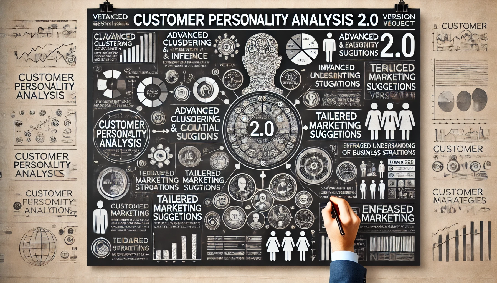
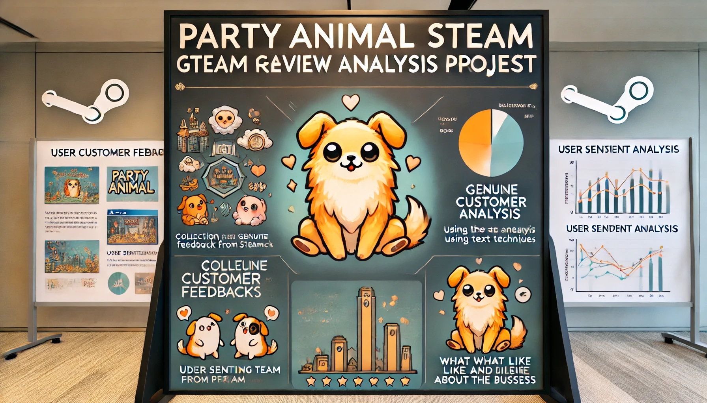
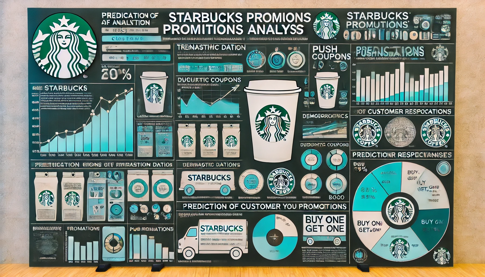
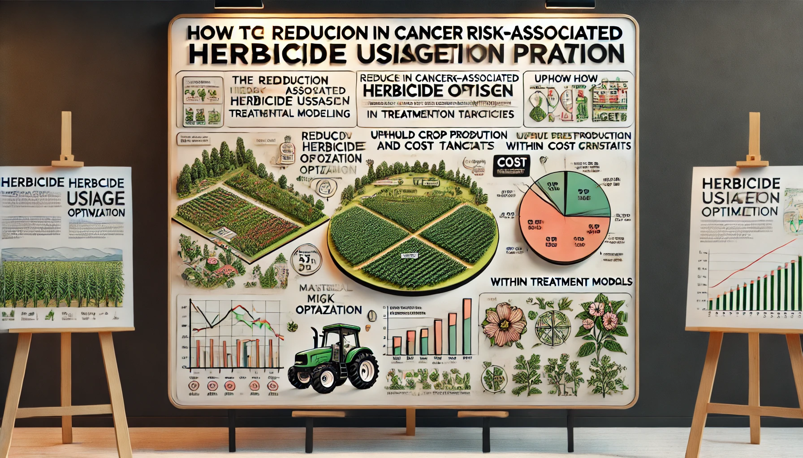

About Me
AI Solution Architect with diverse expertise and industry experience
With a strong background in AI and data analytics, I specialize in creating innovative solutions for complex industrial problems. My experience spans multiple sectors, allowing me to bring a unique perspective to each project. I'm passionate about leveraging cutting-edge AI technologies to drive efficiency, reduce costs, and improve outcomes across various industries.
Education
-
Business Technology Management, Computer Science, and Data Analytics
Skills
-
Industries: Energy, Industrial Automation, Pharmaceutical, Precision Electronics, Transportation
-
Office: MS Office, Visio, Project, SharePoint, Jira, Confluence, Notion
-
Big Data:
-
Programming Languages: Python, SQL, R
-
Machine Learning: Scikit-learn, SciPy, PyTorch, TensorFlow
-
NLP: nltk, SpaCy, Vader
-
GenAI: LLM, Diffusion, GPT4-v, Qwen
-
Cloud Services: Azure, AWS
-
Data Visualization: PowerBI, Access, Tableau
-
Data Management: Lakehouse, Databricks, Arcteryx, Informatica, IBM COGNOS, IBM Netezza
-
-
Development: Java, Web Frontend, UI & UX Design, Project Management, Solution Architecture Design

Projects

Customer Personality Analysis
Applied clustering and causal inference on customer data for segmentation and determining variable causality, enhancing marketing strategies.

Party Animal Steam Game Feedback Analysis
Analyzed game reviews using NLP and sentiment analysis to support investment strategy optimization.

Starbucks Promotional Strategy Analysis
Utilized data mining and visualization techniques using Python, analyzed Starbucks consumer behavior and made prediction on offer completion, optimizing promotional strategies to enhanced customer engagement and contributed to revenue growth.
Covid-19 Database and Alerting System
Designed and developed a database and alerting system with SQL that records PCR test positive patients and close contacts data by tracking and alerting on positive cases for public health safety management.

Herbicide Usage Optimization Project
Achieved a reduction in cancer risk-associated herbicide usage by applying combination of mathematical modelling and optimization techniques, successfully upholding crop production and cost targets within treatment method constraints.
Contact
Interested in collaborating or learning more about my work? Feel free to reach out!
Contact Information
- Email: chengyan.liu@mail.mcgill.ca
- LinkedIn: linkedin.com/in/kelly-chengyan-liu
- GitHub: github.com/CLIUKELLY